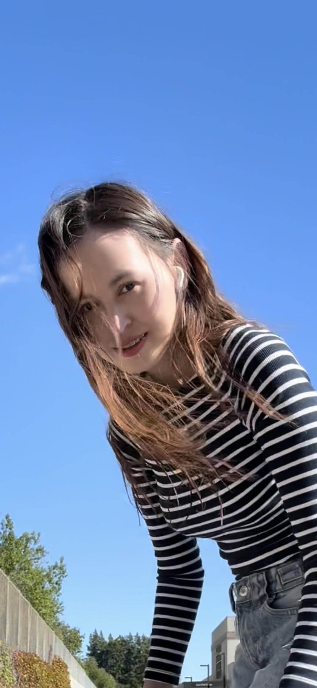
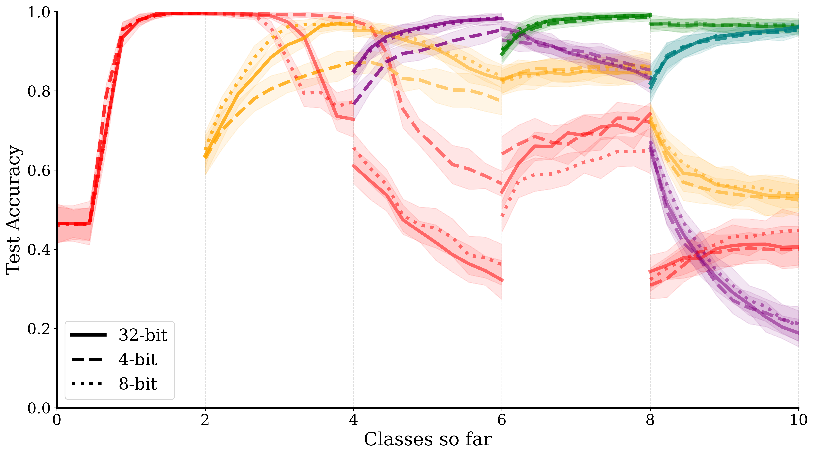
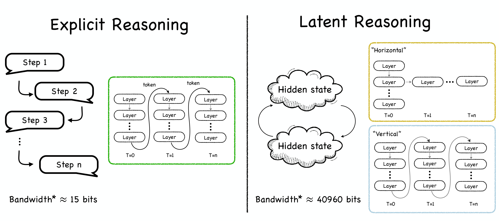
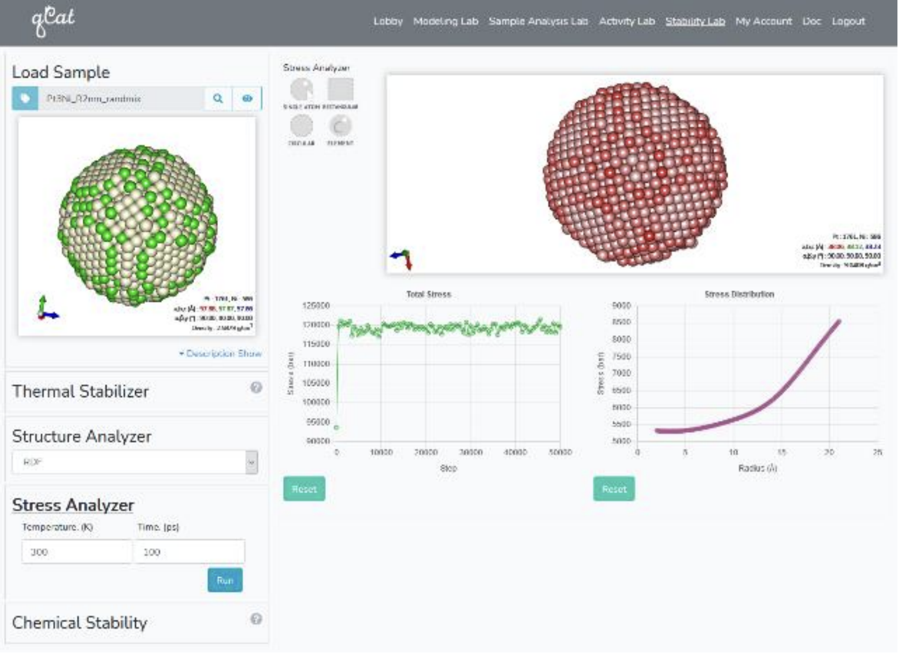

|
Assel Kembay I am a PhD student in the Neuromorphic Computing Group at the University of California, Santa Cruz, supervised by Prof. Jason Eshraghian. Prior to joining UCSC, I received my M.S. degree from Korea Institute of Science and Technology (KIST) in 2023. My research focuses on developing lifelong adaptability in AI systems in dynamic real-world environments. I have been approaching this by developing new techniques in knowledge distillation through space and time, and continual learning. |
 |
{kind=link}
ResearchMy research focuses on developing lifelong adaptability in AI systems in dynamic real-world environments. I have been approaching this by developing new techniques in knowledge distillation through space and time, and continual learning. My recent research interests include continual learning, efficient training and inference for large models, and brain-inspired AI/ML. Some papers are highlighted. |
Publications(*: equal contribution) |
|
2025 |
|

|
A predictive approach to enhance time-series forecasting
Skye Gunasekaran, Assel Kembay, Hugo Ladret, Rui-Jie Zhu, Laurent Perrinet, Omid Kavehei, Jason Eshraghian Nature Communications, 2025 paper / code Future-Guided Learning: A predictive approach to enhance time-series forecasting. |
|  |
A Quantitative Analysis of Catastrophic Forgetting in Quantized Spiking Neural Networks
Assel Kembay*, Karina Aguilar*, Jason Eshraghian ISCAS, 2025 paper / code Quantitative analysis of catastrophic forgetting in quantized spiking neural networks for continual learning applications. |
2024 |
|

|
Leveraging Spiking Neural Networks for Solar Energy Prediction in Agriculture
Assel Kembay, Rui-Jie Zhu, Nicholas Kuipers, Jason Eshraghian, Colleen Josephson BayLearn ML, 2024 project page / paper / code Utilizing spiking neural networks for efficient solar energy prediction in agricultural applications. |
Preprints & Under Review |
|

|
Efficient Knowledge Distillation via Salient Feature Masking
Assel Kembay, Skye Gunasekaran, Rui-Jie Zhu, Yu Zhang, Jason K. Eshraghian arXiv, 2025 code Novel approach to knowledge distillation using salient feature masking for efficient model compression. |
|  |
A Survey on Latent Reasoning
Rui-Jie Zhu, Peng T., Cheng T., Qu X., Huang J., Zhu D., Assel Kembay, Jason Eshraghian, et al. arXiv, 2025 arXiv / code Comprehensive survey on latent reasoning approaches in machine learning and AI systems. |

|
Learning with Spike Synchrony in Spiking Neural Networks
Yuchen Tian, Assel Kembay, Nhan Duy Truong, Jason K Eshraghian, Omid Kavehei arXiv, 2025 arXiv / code Novel learning algorithm based on spike synchrony for enhanced performance in spiking neural networks. |
~2023 & Earlier |
|
|  |
Simulation Web Platform for the Electro-Chemical Oxygen Reduction Reaction
Kim Sch., Lee Ch., Lee B., Seol D., Kim D., Assel Kembay, Yun K., Jang S., Lee J. IWCN, 2021 (Oral) paper / demo Web simulation platform for analyzing electro-chemical oxygen reduction reactions. |

|
Web Platforms for Conventional Simulations of Matters
Kim Sch., Kim D., Assel Kembay, Kim S., Yun K., et al. Korean Physical Society Spring Meeting, 2021 (Oral) paper / demo Development of web platforms for conventional simulations of matter properties. |

|
A Simulation Web Platform for Analyzing Electronic Structures of Semiconductors
Kim S., Assel Kembay, Lee J., et al. Korean Physical Society Spring Meeting, 2021 paper / demo Web simulation platform for analyzing electronic structures in semiconductor materials. |
Research Interests
Continual Learning: Developing AI systems that can learn continuously without forgetting previous knowledge. |
|
Website template adapted from Jon Barron's website. |